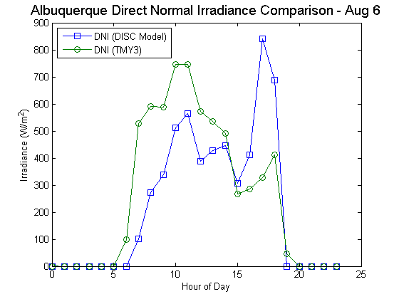

pvl_disc
Estimate Direct Normal Irradiance from Global Horizontal Irradiance using the DISC model
Contents
Syntax
DNI = pvl_disc(GHI,Z, doy) DNI = pvl_disc(GHI,Z, doy, pressure)
Description
The DISC algorithm converts global horizontal irradiance to direct normal irradiance through empirical relationships between the global and direct clearness indices.
Inputs
- GHI - a scalar or vector of global horizontal irradiance in W/m^2. If GHI is a vector it must be of the same size as all other vector inputs. GHI must be >=0.
- Z - a scalar or vector of true (not refraction-corrected) zenith angles in decimal degrees. If Z is a vector it must be of the same size as all other vector inputs. Z must be >=0 and <=180.
- doy - a scalar or vector of values providing the day of the year. If doy is a vector it must be of the same size as all other vector inputs. doy must be >= 1 and < 367.
- pressure - a scalar or vector of values providing the site pressure in Pascal. If pressure is a vector it must be of the same size as all other vector inputs. pressure must be >=0. Pressure may be measured or an average pressure may be calculated from site altitude. If pressure is omitted, standard pressure (101325 Pa) will be used, this is acceptable if the site is near sea level. If the site is not near sea-level, inclusion of a measured or average pressure is highly recommended.
Outputs
- DNI - the modeled direct normal irradiance in W/m^2 provided by the Direct Insolation Simulation Code (DISC) model.
- Kt - Ratio of global to extraterrestrial irradiance on a horizontal plane.
Example
This example shows the measured and model-estimated direct normal irradiance for August 6 (TMY3 file for Abluquerque, NM). Note that the model-estimated quantity is not a match. This is a very difficut quantity to estimate and there are large uncertainties associated with using model estimates for DNI.
TMYData = pvl_readtmy3('723650TY.csv'); TimeMatlab = TMYData.DateNumber; Time = pvl_maketimestruct(TimeMatlab, ones(size(TimeMatlab))*TMYData.SiteTimeZone); dayofyear = pvl_date2doy(Time.year, Time.month, Time.day); DNI = TMYData.DNI; % Read in for comparison with results DHI = TMYData.DHI; % Read in for comparison with results GHI = TMYData.GHI; Location = pvl_makelocationstruct(TMYData.SiteLatitude,TMYData.SiteLongitude,... TMYData.SiteElevation); %Altitude is optional PresPa = TMYData.Pressure*100; %Convert pressure from mbar to Pa [SunAz, SunEl, AppSunEl, SolarTime] = pvl_ephemeris(Time,Location,PresPa,TMYData.DryBulb); DNI_model = pvl_disc(GHI,90-SunEl, dayofyear, PresPa); figure tfilter = and(Time.month == 8,Time.day == 6); plot(Time.hour(tfilter),DNI_model(tfilter),'-s') hold all plot(Time.hour(tfilter),DNI(tfilter),'-o') legend('DNI (DISC Model)','DNI (TMY3)','Location','NW') xlabel('Hour of Day') ylabel('Irradiance (W/m^2)') title('Albuquerque Direct Normal Irradiance Comparison - Aug 6','FontSize',14)
References
See Also
pvl_date2doy, pvl_ephemeris, pvl_alt2pres
Copyright 2012 Sandia National Laboratories